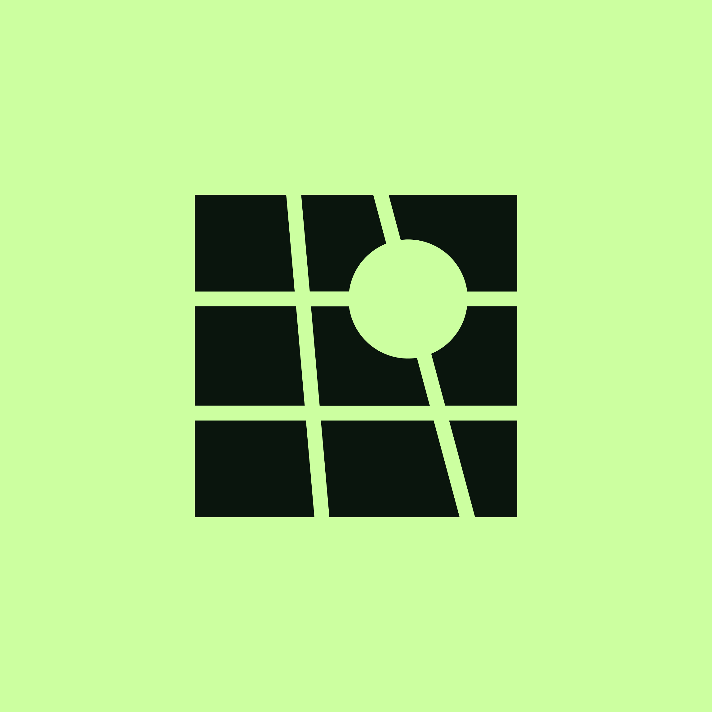

The 1st Workshop on Physical AI brings together researchers across vision, graphics, robotics, and generative modeling to advance physics-grounded understanding of the real world — from physical property estimation and 3D/4D reconstruction to differentiable simulation and physically plausible generation.
Physical AI seeks to endow AI systems with a deep, physics-grounded understanding of the real world. While recent advances in computer vision have enabled large-scale geometric reconstruction, multimodal reasoning, and generative modeling, most systems remain limited in modeling physical properties — mass, friction, material behavior, structural stability, deformation, and dynamic interactions.
This workshop integrates physical reasoning throughout the pipeline: physical property estimation, physics-informed 3D/4D reconstruction, differentiable simulation, physically plausible generation, and embodied interaction. Rather than treating physics as a downstream refinement, PhysAI positions it as a core inductive bias for representation learning and world modeling.
The workshop fosters interdisciplinary discussion across vision, graphics, robotics, and digital twinning, and is built around 10 invited talks and a competition on dynamic 4D reconstruction.
Physical attribute estimation and reasoning — materials, mass, friction, affordances.
Reconstruction from sparse or unconstrained inputs that respects physical priors.
Generative models and world simulators for physically consistent world modeling — a key recent goal of physical-world AI.
Reasoning from images, videos, and multi-modal data about physical behavior.
Robot learning in physics-grounded virtual environments and digital twins.
New benchmarks and datasets for physical scene understanding and reconstruction.
A line-up of leaders shaping the next generation of physics-grounded AI. Listed alphabetically.
* Speaker list is tentative; confirmations to be announced.
Full-day workshop · 10 invited talks · competition highlights and awards.
Times are local to the ECCV 2026 venue and are subject to minor changes.
A two-track benchmark for reconstructing the physical world in motion.
A team spanning vision, graphics, robotics, and generative modeling — across Oxford VGG, NTU PVG, NTU MMLab, ETH Zurich, Google DeepMind, NAVER LABS Europe, and Ropedia.
We gratefully acknowledge Ropedia's support of PhysAI 2026 and the USD 2,000 award for the PhysAI Dynamic 4D Reconstruction Challenge winner.

Ropedia Physical AI Data Infrastructure Visit website →For questions about the workshop, the challenge, or sponsorship opportunities, please reach out: